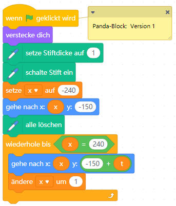
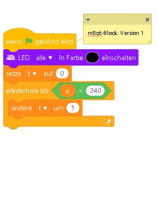
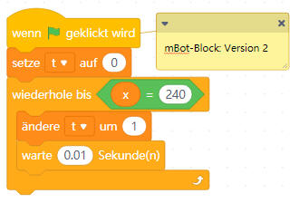
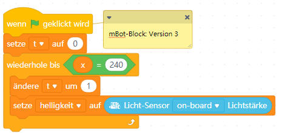
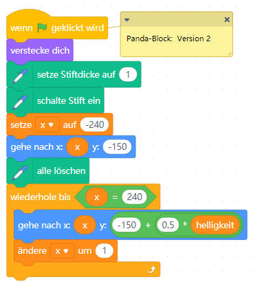
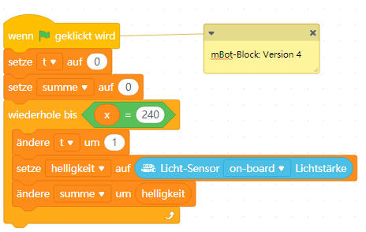
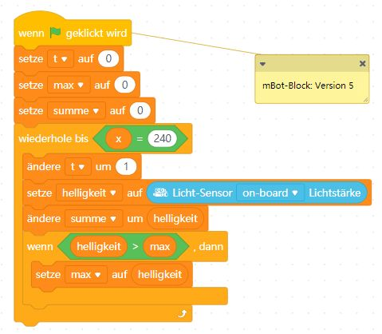
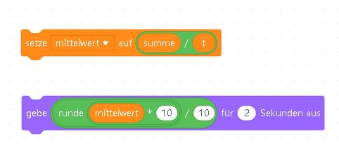
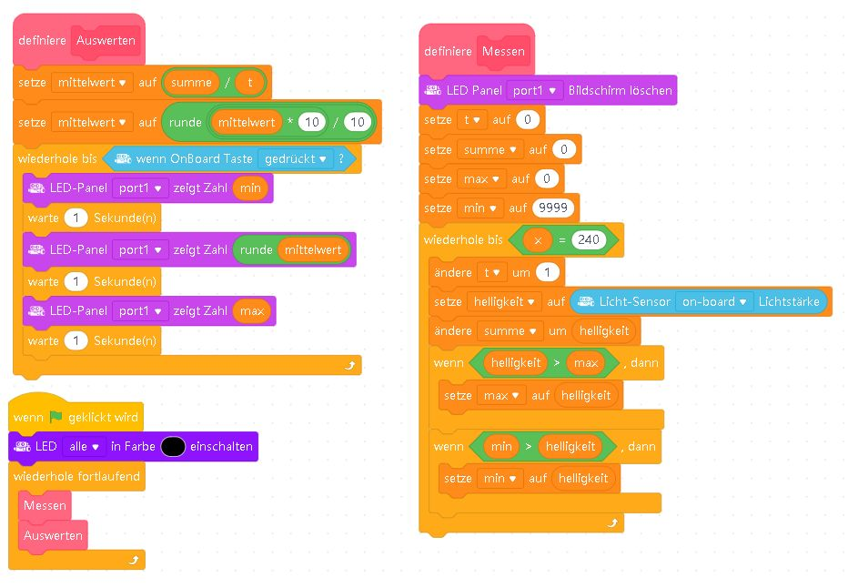

Der mBot überträgt die Werte seines Onboard-Lichtsensors an die Figur Panda. Der Panda zeichnet daraus ein Diagramm. Danach werden Minimum, Mittelwert und Maximum bestimmt.
1. Ausgangsprojekt
- Erstelle in mBlock ein neues Projekt mit dem Gerät mBot und der Figur Panda.
- Füge der Figur Panda die Erweiterung Malstift hinzu.
- Schalte die beiden Onboard-RGB-LEDs gegebenenfalls aus.
- Ordne dem Panda und dem mBot die beiden abgebildeten Skripte zu.
- Speichere das Projekt als
mBot-Datenlogger.mblockund vergleiche die Änderungsgeschwindigkeit der Variablenxundt.


2. Messzeit verändern
Ergänze zunächst eine kurze Wartezeit. Füge anschließend die Messung der Helligkeit hinzu. Beobachte, wie sich die Schrittweite der Zeitvariable und die Anzahl der Messwerte verändern.


3. Diagramm skalieren
Ändere den Panda-Block so, dass der Helligkeitswert auf eine passende y-Koordinate umgerechnet wird. Bei sehr hellem Arbeitsplatz kann der Faktor beispielsweise von 0,5 auf 0,1 verkleinert werden.

4. Mittelwert und Maximum
Summiere alle gemessenen Helligkeitswerte. Der Mittelwert ergibt sich aus summe / t, sofern t der Anzahl der Messwerte entspricht. Bestimme zusätzlich den Maximalwert.



5. Minimum, Auswertung und eigene Blöcke
- Initialisiere
minmit einem Wert, der sicher über allen erwarteten Helligkeitswerten liegt. - Aktualisiere
min, wenn der aktuelle Messwert kleiner ist. - Definiere die eigenen Blöcke Messen und Auswerten.
- Zeige Minimum, Mittelwert und Maximum nacheinander an. Die Abbildung verwendet jeweils eine Sekunde. Wird im Arbeitsauftrag eine Anzeigezeit von fünf Sekunden verlangt, müssen die drei Warteblöcke auf fünf Sekunden geändert werden.
- Beende die wiederholte Anzeige mit dem Onboard-Taster und starte anschließend eine neue Messung.

6. Auswertung der Lösung
- Wie viele Messwerte werden während einer Aufzeichnung bestimmt?
- Wie viele Messwerte stellt der Panda grafisch dar?
- Entspricht die horizontale Achse tatsächlich der Zeit?
- Wie lässt sich eine Messung im Sekundentakt erreichen?
- Wie muss die Berechnung geändert werden, wenn
tnicht genau der Anzahl der Messwerte entspricht?